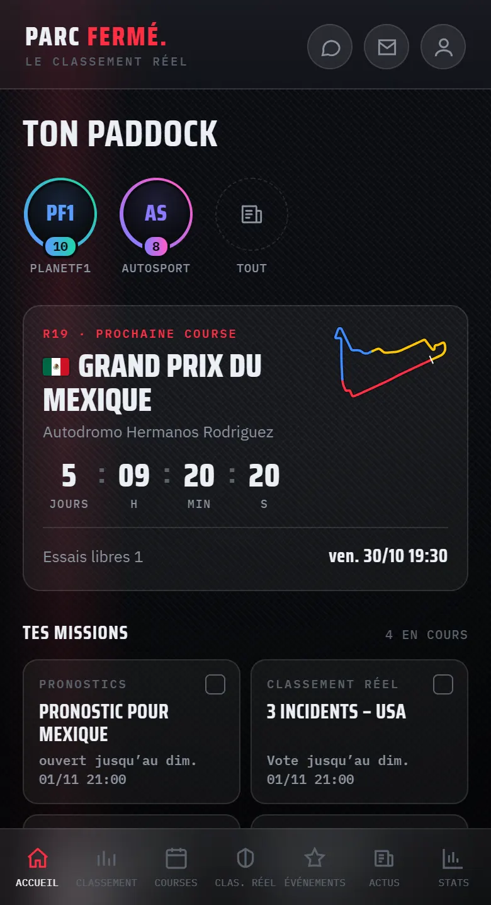
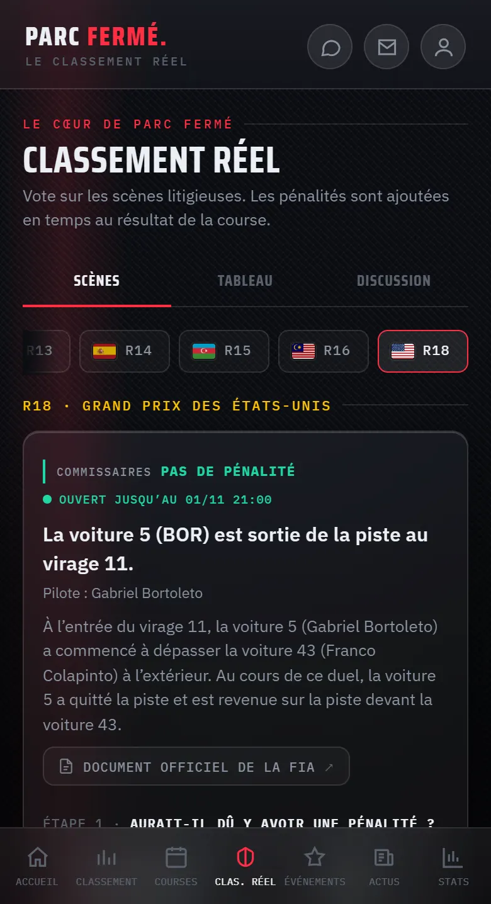
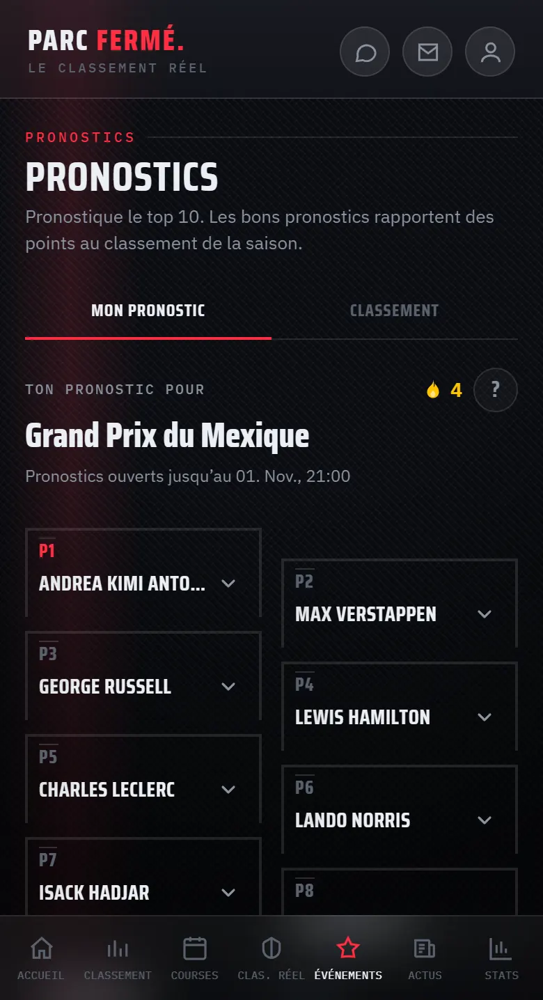
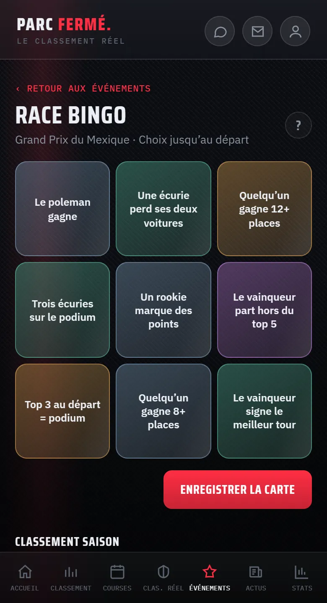
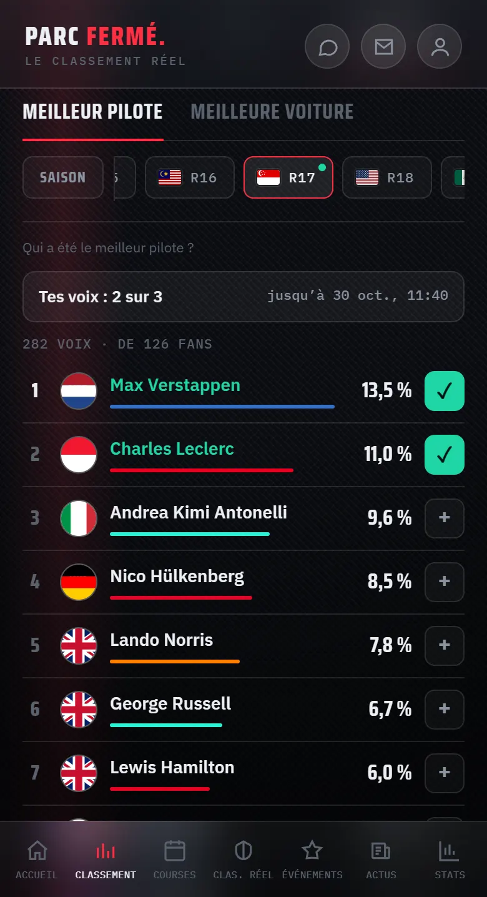
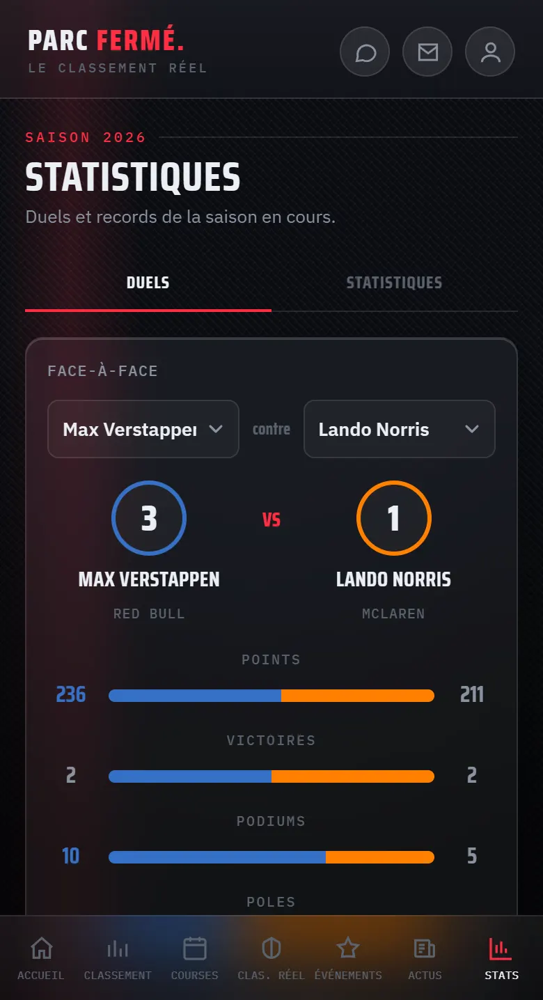

PARC FERMÉ
Ton paddock pour chaque week-end de course.
Programme et résultats, ton verdict sur les incidents contestés, pronostics, Race Bingo et plus encore — gratuit, sans publicité et sans pistage.

Ce qui t’attend
- 01Week-end de course
Toutes les séances avec l’heure de départ dans ton fuseau horaire, compte à rebours et météo. Ensuite les résultats avec podium — sprints compris.
- 02Classement réel
Les incidents contestés de chaque course : tu décides s’il fallait une pénalité. Découvre le championnat selon le verdict des fans.
- 03Pronostics
Pronostique le top 10 avant le départ, marque des points et affronte tes amis dans vos propres salons.
- 04Race Bingo
Remplis ta carte avec neuf événements. Les lignes complètes comptent double ; après l’évaluation, tu vois les cartes des autres.
- 05Fan Power
Choisis le meilleur pilote et la meilleure voiture après chaque course — par course et sur la saison.
- 06Statistiques
Duels entre coéquipiers, records et un outil pour tes propres analyses, pour les pilotes et les écuries.
- 07Mot de course
Chaque jour un terme du sport automobile, en six essais. Construis ta série.
- 08Et plus
Feux de départ, le quiz « Grill the Fan », des sondages, un chat Watch-Along pendant la course et les gros titres en stories.
Un aperçu de l’app





Équitable et privé
Connexion avec Google
Un compte est nécessaire pour les pronostics, les votes, les jeux et le chat. Tu te connectes avec ton compte Google — nous reprenons uniquement ton adresse e-mail et ton nom pour créer ton profil. Nous n’accédons à aucune autre donnée de ton compte Google.
Ce que nous traitons et pourquoi est expliqué dans la politique de confidentialité.